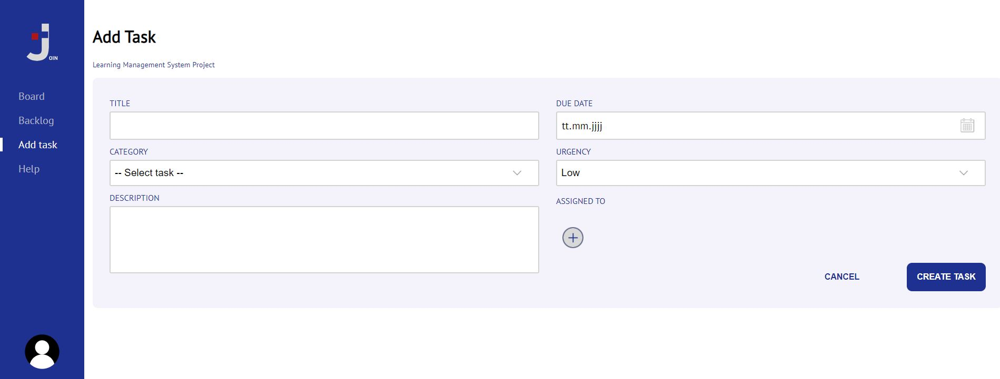

HELP
How to use the Join app- On this page you can put your log-in data. If you are not registered please click sign up. You have also possibility to log in without registration by clicking "log in as guest"
- Please insert your data and create your password as well as the color optionally to be able to log in
- Create a task on the "Add Task" page 
- On following "Backlog" page you can find the created tasks. Put your cursor on the backlog to expand it
- After clicking on it you can expend it. Here you have the possiblity to send it to the board, edit or delete it
- If you want to edit it by clicking the edit symbol, you can change the task here and save it new.
- The tasks sent to the "Board" page, are displayed first in the "To Do" column and can be moved with drag & drop depending on the processing status.